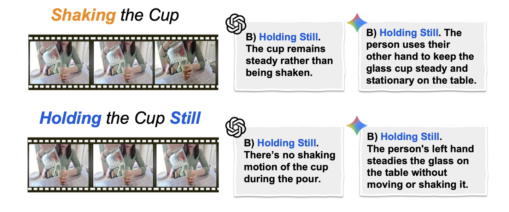
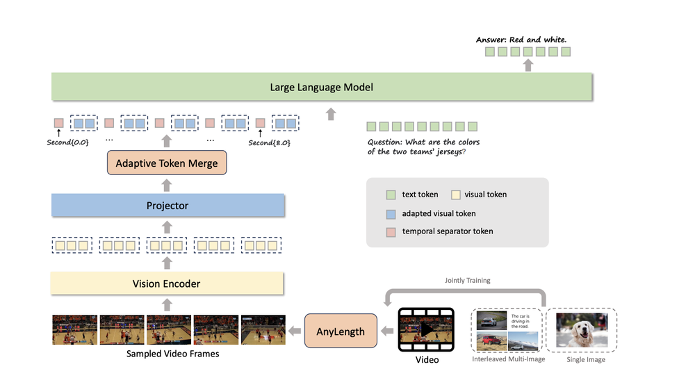
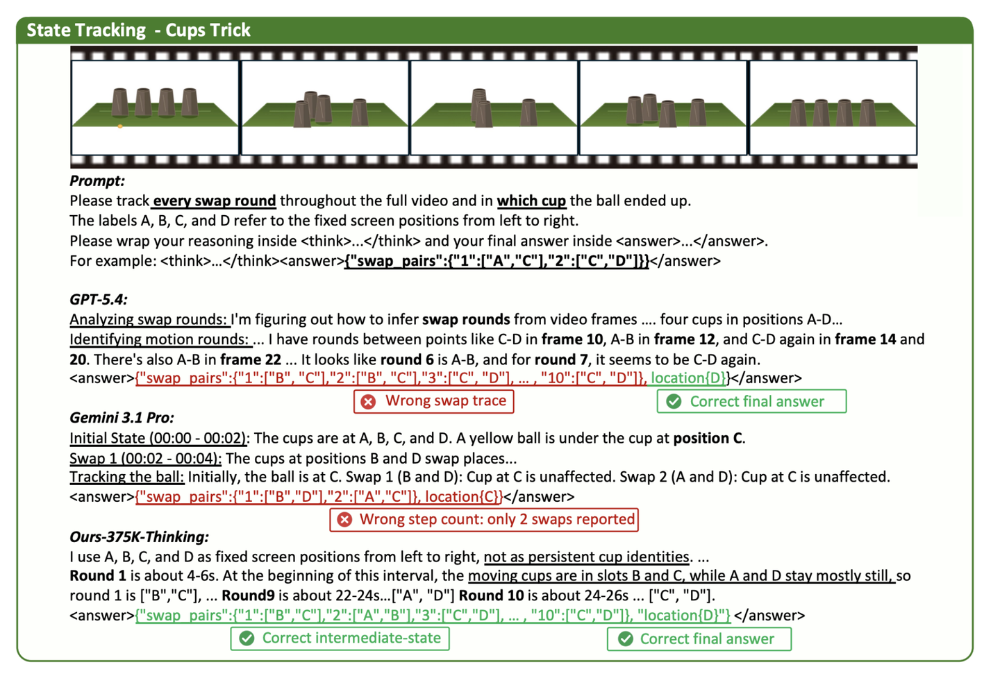

VLMs Can See Frames. But Can They Understand Time?
While vision-language models can describe what appears in a single frame, they may not always be able to tell what happened before.
Think of a simple video where, initially, there is a cup on a table. Then, a hand enters the frame and takes the cup. A few seconds later, the cup is in the person’s hand. A VLM could probably describe each of these frames individually: “there is a cup on the table,” “there is a hand near the cup,” and “someone is holding a cup.”
But can the model reason about the event taking place in the video? Did someone pick up the cup? That is the problem of temporal reasoning.
In the previous post, we talked about mirages: situations in which a VLM can give an answer about an image, but that answer is not actually grounded in the visual evidence. Temporal reasoning poses a similar question: is the model’s reasoning actually grounded in temporal evidence?
What is temporal reasoning?
Temporal reasoning is the ability to reason about time-based events depicted in visual data. What happened first? What changed? What stayed the same? How did objects move? Was something hidden?
All of these questions cannot be answered by looking at a single frame: they are inherently sequentially dependent. To answer them, a VLM would need to perform some sort of comparison between frames and maintain some internal state.
In other words, temporal reasoning is not just seeing things. It is seeing things change.
Why image understanding is not enough
Understanding videos is not the same as understanding images. Even if a model can reason about isolated scenes, it may not be able to handle the addition of time. For example, two videos may have the same people and objects in them, but have subtle differences in motion that change the meaning of the video as a whole. A VLM that reasons mostly about static content may not be aware of such differences, even if they are obvious to a human.
Research on temporal video understanding increasingly points to the same issue: models can appear strong when static visual cues are enough, but struggle when the answer depends on motion, order, or timing. A stronger test is to isolate temporal structure from static visual content. TimeBlind does this through a minimal-pair setup, pairing videos with similar static content but different temporal dynamics and using complementary questions to reduce language priors. Even under this controlled setup, the best-performing model achieved only 48.2% Instance Accuracy, compared with 98.2% for humans [TimeBlind, arXiv 2026]. This gap suggests that many current video models still rely on static visual shortcuts rather than genuine temporal reasoning.

The point is simple: changing the order, motion, or timing of events can change the meaning of a video. If two videos contain the same objects but differ in temporal structure, they should be understood differently.
How VLMs Process Video
Most video-language models do not process video as a continuous stream in the same way humans experience it. Instead, they typically sample frames from a video, encode those frames into visual tokens, project those tokens into the language model’s embedding space, and then pass the combined visual and text tokens into the LLM.
At a high level, the process looks something like this:
Video → sampled frames → visual encoder → tokens → projector → LLM → answer

This is similar to how image-language models work, but video adds an extra problem: time. The model needs some way to know not only what appears in each frame, but also when each frame occurred and how the frames relate to each other.
Recent video-language models try to handle this in different ways. Some use a fixed number of sampled frames, while others sample more frames or compress visual tokens to fit longer videos into the model’s context window. TimeMarker, for example, uses dynamic frame sampling and adaptive token merging to handle videos of different lengths. It also introduces temporal separator tokens, such as Second{2}, which are inserted alongside visual frame tokens to explicitly mark when a frame appears in the video [TimeMarker, arXiv 2024].
The motivation is straightforward: if a model is going to answer questions about video, it needs access to both visual content and temporal position. It is not enough to know that an event happened; the model may also need to know when it happened.
Why temporal reasoning is hard
Temporal reasoning is hard because it requires more than just seeing things. A model has to maintain, update, and compose visual evidence as time goes on. Recent research frames this as Video Temporal-Logical Reasoning: a set of abilities that go beyond standard image captioning and require a model to maintain and update visual evidence as time progresses [Video-MME-Logical, arXiv 2026]. These abilities include state tracking, sequential counting, temporal ordering, dynamic spatiality, and structural composition.
A few of these are especially intuitive.
State tracking refers to a model’s ability to maintain visual evidence as time passes. For example, in a shell game, a ball is hidden under one of the shells and then the shells are shuffled around. The model has to keep track of the ball’s location throughout the game, even when the ball is not directly visible.

Temporal ordering is the ability to know what happened before what. “A person picked up the cup and then put it down” is different from “a person put down the cup and then picked it up.” The same objects and actions may appear in both cases, but the order changes the meaning.
Beyond these temporal reasoning abilities, another important challenge is object consistency: models need to track objects through occlusions, disappearances, reappearances, state changes, and interactions [TOC-Bench, arXiv 2026].
Finally, temporal reasoning requires compositionality. A model may have to combine different pieces of temporal evidence: the red ball went left, then the blue cube went right, then the red ball hit the cube. The answer depends on the relationship between these events, not just the presence of the ball or cube. Thus, video reasoning requires a temporal composition of evidence.
Why this matters for real-world vision systems
The importance of temporal reasoning lies in the fact that real-world vision systems reason about streams of data rather than individual images.
A robotic system needs to know whether a person entered or exited the robot’s path. A manufacturing quality control system has to know whether a defect appeared, persisted, or disappeared. A security camera has to know if a bag was left somewhere or taken away. A sports analyst has to reason about events in a game rather than individual pixels. And so on. For all such systems, a vision model cannot simply reason about individual frames: it has to be able to connect the current moment to the past.
What better video reasoning requires
As vision-language models move from image-based understanding to video-based understanding, temporal reasoning becomes a central challenge. A model may be able to identify objects and describe events in a video, but that alone is not enough to answer questions that span multiple frames or depend on the order of events.
Better video reasoning requires mechanisms that preserve temporal evidence. A model needs some form of temporal memory, so relevant past frames or events are not immediately discarded. It may need object-centric tracking, so it can recognize that the same cup, ball, person, or machine part is moving and changing across time. Its answers should also be temporally grounded: if the model says “the person picked up the cup,” it should ideally be able to point to the moment when that happened.
This becomes especially important for real-world vision systems that operate on continuous streams of visual evidence. A live video system needs to update its understanding as new frames arrive, preserve relevant older information, and avoid answering from a single frame when the question requires temporal context.
Thus, video understanding is not image understanding applied to multiple pictures. It requires a different set of skills: tracking change, preserving context, grounding answers in time, and reasoning across a stream.